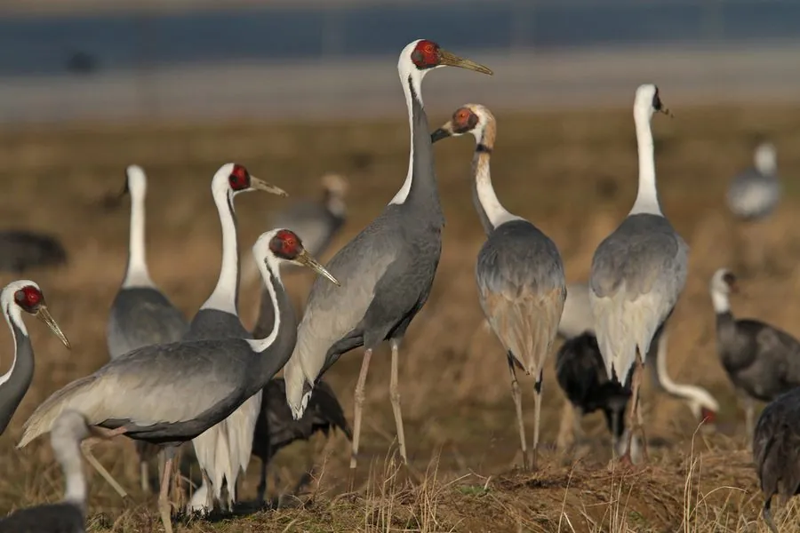

鸟类 · 动物界
白枕鹤 Antigone vipio

脸侧裸露鲜红、颈后白色的大型鹤类，繁殖于蒙古和黑龙江流域，越冬于长江中下游与朝鲜半岛，全球约 1 万只。
- 分类
- 门脊索动物门纲鸟纲目鹤形目科鹤科属赤颈鹤属
- 栖息环境
- 繁殖于草原湿地和芦苇沼泽，越冬于浅水湖泊、河滩与农田
- 地理分布
- 繁殖于蒙古、俄罗斯东南部与中国东北，越冬于长江中下游及朝鲜半岛
- 保护级别
- IUCN 易危（VU）；中国国家一级保护动物
物种志
白枕鹤体长 112–125 cm，体重 4.5–6 kg，翼展约 200 cm。身体羽毛以灰白为主，颈后和头顶为白色，脸侧有一大块鲜红色的裸露皮肤，喉部和颈前为黑色，翅膀和背部呈灰色，飞羽黑色。它的喙为黄绿色，腿粉红色。繁殖期脸上红色裸皮会更加鲜艳，是辨认它的关键特征。
白枕鹤在蒙古、俄罗斯东南部和中国东北的湿地繁殖，秋季南迁，到中国长江中下游的鄱阳湖、安徽沿江湿地以及朝鲜半岛越冬。它们吃植物根茎、谷物、昆虫和小型脊椎动物，常在农田和浅水沼泽中觅食。繁殖期每窝产卵 2 枚，孵化 28–30 天。由于湿地萎缩和人为干扰，全球种群约 1 万只，被世界自然保护联盟列为易危物种，中国将其列为国家一级保护动物。
形态与习性
- 食性植物根茎、谷物、昆虫和小型脊椎动物
- 体长112–125 cm
- 体重4.5–6 kg
- 翼展约 200 cm
- 繁殖每窝 2 枚卵，孵化 28–30 天
- 寿命野外约 20 年
- 种群全球约 1 万只
趣味知识
- 白枕鹤脸侧的裸皮鲜红，繁殖期颜色更艳，因此也被叫作“红面鹤”。
- 它们繁殖于蒙古和黑龙江流域，秋季结群南迁到鄱阳湖等地越冬。
- 白枕鹤越冬时常在农田里捡食稻谷和落粒，也会取食草根。
- 全球白枕鹤仅约 1 万只，被列为易危物种和国家一级保护动物。